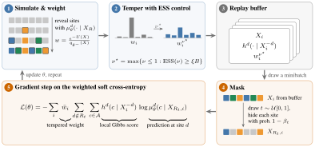

Preprint · arXiv 2610.01739
Fixed-point neural samplers on discrete spaces
Introducing DIG-IN, the Discrete Gibbs Iterative Neural Sampler
* Equal contribution. † Equal supervision.
Overview
Sampling from a discrete distribution known only up to its normalizing constant is hard. MCMC mixes slowly across energy barriers, and existing discrete neural samplers tend to collapse onto a single mode. DIG-IN trains a masked diffusion sampler from density evaluations alone, with no training data.
Each iteration draws configurations from the current model, tempers their importance weights to a target effective sample size, and fits the model with a weighted cross-entropy. The labels in that loss are Gibbs labels: the normalized distribution over single-site changes of a configuration, a discrete analogue of the score. They give a strong learning signal and keep the sampler from collapsing onto one mode.
- Ising & PottsThe only method in our comparison that covers every mode in the ordered phase while also giving accurate ln Z.
- AmortizedOne sampler conditioned on (β, h), on lattices up to D = 2500 sites.
- AlloysRecovers the phase diagrams of Ag–Pd and Cu–Au from a single sampler conditioned on (T, Δμ).

Alloy phase diagrams
For Ag–Pd and Cu–Au, a single sampler is conditioned on temperature T and chemical-potential difference Δμ over a DFT-fitted cluster expansion. Its free-energy estimates give the phase diagram through a common-tangent construction. Here we point into regions of that diagram and watch the sampler place atoms on the fcc cell until the structure of the phase appears.
Solid lines are the boundaries DIG-IN predicts, dashed lines the reference. Each marker sits at the composition of the structure shown. The cell is periodic and is drawn as a 4 × 4 × 4 block of cubic fcc cells, so each site appears about twice. Drag the block to rotate it.
Amortized sampling across temperature and external field
We train a single DIG-IN model on the 50 × 50 Ising model and another on the 24 × 24 three-state Potts model, each conditioned on the inverse temperature β and an external field h. The film points at conditions on the training grid and replays how the sampler builds a configuration there, revealing one site or a small group of sites per network call.
Every trajectory is a draw from the trained checkpoint, recorded call by call. Grey cells are still masked. Outlined cells were revealed in the most recent calls. Each thumbnail is one draw at its grid point; at the points the film visits, it is the draw being replayed.
Citation
@article{he2026fixedpoint,
title = {Fixed-point neural samplers on discrete spaces},
author = {He, Jiajun and Blessing, Denis and Cheng, Mouyang
and Du, Yuanqi and Domingo-Enrich, Carles},
journal = {arXiv preprint arXiv:2610.01739},
year = {2026}
}